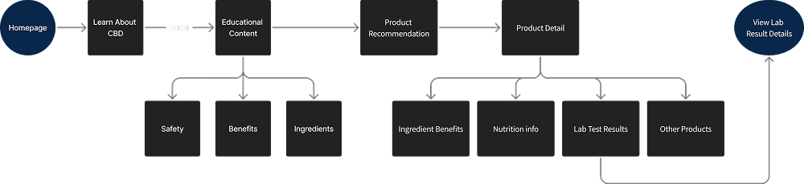

W*nder
>Works like a W*nder
Each sip of our delicious CBD sparkling beverages has been thoughtfully formulated to keep you energized, focused, and relaxed throughout the day
W*nder is a CBD infused sparkling beverage brand that has been specially formulated to accompany various moments throughout the day morning, noon, and night. This product comes in various variants that have different benefits, such as increasing energy in the morning, helping focus at work, or providing a sense of calm at night. W*nder emphasizes transparency and quality by partnering with third party laboratories for product testing. Through a modern approach and a clean and informative branding style, W*nder not only offers products, but also education about the benefits of CBD. The brand is also socially committed by donating 4.20% of their profits to communities affected by cannabis regulation.
1. Many people experience stress, fatigue, and difficulty focusing in their
daily activities.
2. Lack of understanding about the benefits of CBD that is legal and safe to consume.
3. Stigma towards cannabis based products due to long standing negative perceptions.
4. It is difficult to find healthy drinks that are refreshing and provide a calming effect at the same
time.
1. Provides CBD infused beverages specially formulated to boost energy.
2. Provides educational information and quality transparency with independent testing labs.
3. Displaying branding that is clean, modern, and far from the conventional “cannabis” impression.
4. Making social contributions with “The 420 Rule” program to help communities affected by previous
cannabis policies.
In this project, I worked as a UX/UI Designer responsible for designing the experience and visual appearance of the W*nder homepage. My main focus is to build trust and educate users about CBD based products, which are still considered sensitive by some people. My design focus is to build trust by bringing transparency and education through an engaging and structured visual experience.
My role covers end to end design from user flow, wireframing, UI design, to final prototyping by ensuring every visual element and interaction supports the brand's main objectives: build trust, educate, and encourage further product exploration. I also maintain consistency in tone & style so that the W*nder brand appears unique, trusted, and relevant to new users and those who are familiar with CBD.
The design process for this project was divided into four key phases to ensure a user centered and results experience:
In the Discovery phase, I started by conducting a competitor analysis to understand how other CBD brands approach safety and transparency messaging. This analysis helped me identify pain points that are often found in the industry such as a lack of lab test information or a confusing website interface. I also dug deeper into the characteristics of W*nder's users and target audience, including their need for clarity, credibility and education around CBD.
Next, I developed a user flow and user journey map to map out how users would navigate the site and interact with the information provided. My main focus was to create a simple yet informative flow, so that users could easily understand the benefits of W*nder and access product test results in just a few steps. This process was crucial to ensure the user experience remained intuitive despite the educational and technical nature of the content.
Moving into the Design System phase, I designed visual guidelines that are consistent and reflect the brand identity. I chose a warm yet trustworthy color palette to convey a safe and friendly impression, and clean and easy to read typography to support the readability of the information. I also established a neat grid system so that each element on the page has a harmonious visual rhythm and is easy to navigate.
In the Usability Testing phase, I developed a set of tasks and scenarios to test the effectiveness of the design. Users were asked to run scenarios such as searching for product test results, understanding the benefits of CBD, and finding the variant that suits their needs. From this, I gained valuable insights on which flows needed to be simplified and which elements were successful in attracting users' attention. This feedback was then used to refine the design to be truly user centric and conversion oriented.
The discovery process begins with understanding the key issues that users face in the CBD industry, specifically related to product trust and safety. Amidst the rapid growth of the CBD market, many users find it difficult to distinguish legitimate and tested products from those that are not. W*nder wanted to assert its position as a transparent and trusted brand by presenting lab result information openly. Therefore, I needed to design a digital experience that would convey this message in a powerful and accessible way to the target audience.
As part of my strategic approach, I analyzed several key competitors to understand how they present information related to product quality and lab test transparency. My focus was on elements such as page structure, educational messaging, navigation, and accessibility to test data. This analysis helped identify design gaps and opportunities that could be used to strengthen W*nder's position against competitors.
1. Users have difficulty finding lab results that show the quality of the
product.
2. Lack of educational information on the benefits and safety of CBD.
3. Unintuitive navigation structure to find products or important information.
4. Visual branding is not enough to build trust or a professional impression.
No explanation of why lab testing is important to consumers.
1. New users who are curious about the benefits of CBD but are still
hesitant.
2. Health conscious consumers who want to make sure the products they consume are safe.
3. People with active lifestyles who are looking for natural alternatives for relaxation.
4. Loyal CBD users who want a brand with high transparency and trustworthiness.
After understanding the user needs and brand positioning through the discovery process, I proceeded to the ideation stage to design an intuitive and purposeful user experience flow. The goal was to ensure that the information conveyed was easy to understand, especially for new users who may not be familiar with the CBD world. I focused on creating a logical flow that supports the exploration and education process, while also paying attention to how visuals and navigation structure can strengthen engagement.
I created a user flow that leads new users to explore the educational content easily, while giving them the option to understand the W*nder product more deeply. The main focus was to create a short, engaging and barrier free flow.
User Story: As a new user, I want to know educational information about CBD, so that I can learn comfortably and confidently about its benefits and usage.
User journey maps are used to understand the user experience in a more emotional and contextual way. By mapping each step, I can identify opportunities for improvement and create a better experience from the user's perspective.
Scenario: Looking for a CBD product that helps stay energized, focused, and relaxed throughout the day with safe ingredients
Expectation: Understand about CBD with navigation and easy to understand information
To ensure visual consistency and strengthen brand identity, I created a simple yet cohesive design system tailored for W*nder’s educational and product-focused interface. The color palette combines soft neutrals with energizing accent tones to reflect both the calm and focus associated with CBD, while also evoking a sense of trust and clarity. For typography, I chose clean and legible typefaces that maintain readability across different screen sizes, aligning with the brand’s modern and informative tone. Lastly, I applied a responsive 12-column grid system that supports flexibility in layout.
Design System
This design consists of two pages: Homepage and Lab Test Results. I will describe both pages in each section because all sections have important information to understand this project better.
This hero section is the main entry point for visitors to get to know the W*nder brand identity first-hand. Designed with dynamic and colorful visuals of the canned product, this section builds a strong first impression. The headline “Works like a w*nder” stands out, conveying the brand's straightforward positioning that this CBD product is not just a drink, but specifically designed to help users feel more focused, energized and relaxed in their daily lives. The supporting paragraphs below it briefly introduce the product formula, while giving the impression that this product can be part of a daily routine. The “Drink Up” CTA button reinforces the conversion direction, inviting users to start exploring the benefits of the product further.
This section serves as an educational tool to help users understand that each W*nder variant has a function and optimal consumption time of morning, afternoon or evening. The visual “W*nder Meter” is depicted in the form of a clock or dial, which shows the recommended consumption points for each variant. By hovering over each point, the user can see each variant. This is also very helpful for users who are new to CBD, as it provides guidance on when to consume certain products for maximum results. On the right side, additional information is explained in a light but informative copy style, such as that the product can be consumed at any time, but has the best effect at a certain time. The “Get Breakfast Club” CTA is also a follow up path for users who want to engage more deeply, expanding the possibility of long term interaction.
Considering that CBD is still considered new and even controversial in some circles, building trust is a priority. This section aims to address users' doubts about the quality, safety and legality of the product. With the strong headline “Trust us, it works”, W*nder demonstrates a data driven approach and transparency. Key information such as “0 MG THC”, “20 MG CBD”, and “100% CLEAN” appear in the form of easy to understand visual elements.
The narrative goes on to explain the collaboration with Green Scientific Labs, a third party that conducts independent laboratory testing to ensure quality. The “See the Proof” CTA offers concrete evidence to support this claim, giving users direct access to the test report. This demonstrates the brand's commitment to scientific accountability and credibility.
This section is designed to emphasize W*nder's position as a brand that not only sells, but also educates. By featuring various typographic styles of the phrase “We know CBD”, users are given the impression that the brand is rich in insight and confident in its expertise. The clean layout and consistent use of colors help maintain a professional yet approachable feel. On the right-hand side, a sparking question is displayed: “But what exactly is it?”, which represents the curiosity of novice users towards CBD. With the addition of a “Get to Know CBD” CTA, the brand directs users to sources of further information, reinforcing their positioning as a brand that builds literacy, not just looking for sales.
As part of the effort to build value and differentiation, W*nder places their brand mission explicitly in this section. “The 420 Rule” explains that 4.20% of the company's profits are channeled back to communities that have been negatively impacted by cannabis regulations in the past. This move shows that W*nder is not just a commercial brand, but also committed to social justice. The clean and elegant visual of the cannabis leaf is used to signify commitment to the community, rather than just a pop culture symbol. This reinforces brand values and creates an emotional bond with consumers that supports sustainability and business ethics.
IAs the conclusion of the overall user experience on the main page, this footer plays an important role in organizing secondary information while reinforcing a sense of trust. Navigation is clearly divided into categories such as “About CBD”, “Test Results”, and “Shipping & Returns”. The newsletter column invites users to join and get regular updates, creating further conversion opportunities. On the bottom right, there are important disclaimers regarding the use of the product including warnings for pregnant and breastfeeding mothers that demonstrate the brand's responsibility for consumer safety. Copyright information, privacy policy, and links to social media reinforce the brand's professional image and make it easy to access additional support and information.
This section is the main gateway to introduce Wnder's commitment to the safety and transparency of their CBD products. With a bold orange background and large typography that immediately catches the eye, this section emphasizes a common consumer concern: “Is the CBD you are consuming safe and legal?”. Underneath, there's the subtitle “It's the wild west in CBD”, which illustrates how unorganized the CBD industry is today, followed by the explanation that W*nder consistently publishes lab results from Green Scientific Labs to ensure each batch is safe and transparent. This builds trust and positions the brand as a responsible leader in the CBD industry.
The second section presents a comprehensive list of testing parameters conducted on Wnder products, with a clean and minimalist circle design style for each item. There are 9 key points tested: CBD, Microbials, Pesticides, Mycotoxins, Residual Solvents, Heavy Metals, Foreign Materials, Water Activity, and THC. As the user hovers over each item, the benefits of each parameter appear, providing additional education and proving that W*nder pays attention to every important aspect of product safety. This interaction provides an educational and transparent user experience.

In this section, four variants of W*nder CBD drinks are featured: Breakfast Club, Born to Run, Fast Times, and Night Moves. Each product is presented with a brightly colored can display that represents their unique flavors and functions. Below each product, there is a “View Test” button that directs users to the product's specific lab test results. This emphasizes the total transparency of the brand, allowing users to check the quality and safety of the variant they are interested in before purchasing. Attractive product visuals combined with direct access to scientific data creates a balance between aesthetics and credibility.
This section serves as an invitation to learn more about CBD. With the friendly and affirmative heading “We Know CBD”, this section offers help to users who are unfamiliar or want to know more about the benefits, workings, and uses of CBD. Reinforced by a flat design illustration of a CBD bottle with subtle animation, this section gives a lively and informative feel. There is also a “Get to Know CBD” button that encourages users to explore other educational pages of W*nder. This section is very useful for building the brand as a trusted source, not only as a seller, but also as an educator in the field.
The closing section includes quick navigation to important pages such as About Us, Shipping & Returns, as well as a form to sign up for the newsletter. In the center is a “Get Updates” form for users who wish to receive the latest product announcements or information via email. On the right side, there is an important disclaimer from W*nder regarding FDA regulations and who is not recommended to consume CBD products, including pregnant and nursing mothers. This section reflects the brand's legal and ethical responsibility, showing that they are not only transparent, but also compliant with health regulations. The visuals remain minimalistic ensuring the focus remains on the important information.
To evaluate the usability, effectiveness and user satisfaction levels of the W*nder product, I conducted a series of moderated usability testing sessions with participants who represented first-time visitors interested in healthy and safe beverage solutions to support work productivity. The participants had an interest in CBD-based products, but also had concerns about their safety and health benefits. Therefore, the test was designed to simulate how users naturally explore and evaluate products before making a purchase decision.
In each session, participants were presented with realistic scenarios that reflected the user's process of
deciding. The scenarios given were as follows:
1. You need a drink that can energize you for work. You hear that W*nder is the solution that can solve
your problem, but you are not sure if this product is safe for health. So you want to get to know this
product first. What steps do you take?
2. After looking at the product information, you feel unsure about consuming it. You need more detailed
product information. How do you look for it?
3. By looking at the benefits of the ingredients, you already feel pretty confident but haven't found
strong information to buy this product. What should you do?
4. After finding the lab test results, you are very confident to buy this product. How do you buy
it?
Through this scenario, the test focused on how users navigated the W*nder home page to find information about the product, safety, and health benefits. It also assessed how clearly the brand's values and mission were communicated, how easy it was to access information such as lab test results and ingredient descriptions, and how easy it was for users to find CTA buttons such as “View Test”, “Get to Know CBD”, and “Shop”. The results of this test are expected to identify points of friction, the strength of the home page and test result page in building trust with new users, and provide recommendations to improve the overall user experience.
If I had additional time, I would:
1. Conduct additional user research to explore more issues that may not have been revealed and gain new
insights from the user's perspective.
2. Conduct usability testing using the tasks and scenarios that have been created, in order to measure the
effectiveness of information flow, navigation, and user confidence in the product.
3. Resolve any issues found and improve areas that are still lacking to make the user experience more
intuitive and convincing.
4. Iterate on the design to improve visual quality and functionality, and ensure that the final design
truly meets the user's needs.